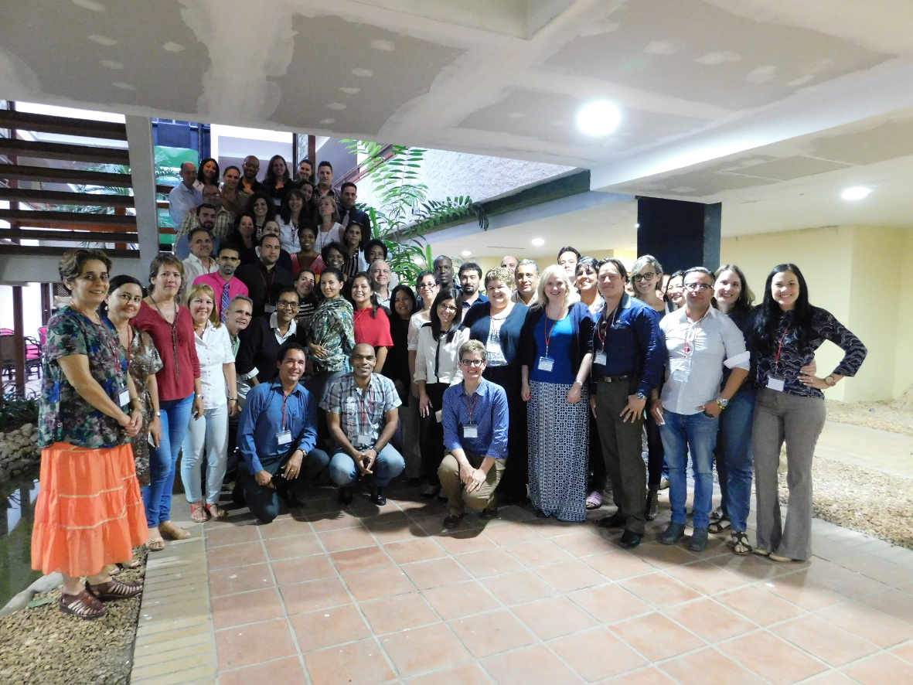

Ediciones Anteriores¶
2016¶
El capítulo cubano de Neurofisiología Clínica (CC-NFC) tuvo el gusto de organizar el 1er Taller Latinoamericano de Monitorización de EEG continuo -EEGc- en Unidades de Cuidados Intensivos (UCI), los días 14 y 15 de Noviembre del 2016 en La Habana, Cuba.
En el taller se impartieron 16 conferencias y se realizaron diversas presentaciones de casos que de forma interactiva contribuyeron al intercambio y acercamiento entre los participantes y el colectivo de profesores. El taller contó con 80 participantes de ellos 61 cubanos, 16 de hermanos países latino-americanos y 1 de África con la siguiente distribución por países:
| Argentina 2 |
| Angola 1 |
| Colombia 1 |
| Costa Rica 1 |
| Cuba 61 |
| Dominicana 1 |
| Ecuador 3 |
| Honduras 2 |
| México 2 |
| Perú 1 |
| Uruguay 3 |
Diversas especialidades estuvieron representadas en el taller, entre ellas los cuidados intensivos, la neurología, la neurofisiología clínica, la pediatría y la neonatología. La representación de diversas disciplinas médicas fue uno de los propósitos del taller porque solo con una mejor comprensión de las ventajas de este tipo de monitorización por parte de todas las especialidades relacionadas se podrá verdaderamente trabajar por mejorar la calidad de la atención al paciente crítico.
Dado el éxito y acogida de este evento el colectivo de profesores reunidos en este 1er Taller tiene el propósito de llevar el mismo a otros países del área para contribuir a la educación continuada de los profesionales de la región y a la difusión de las bondades de esta técnica.
